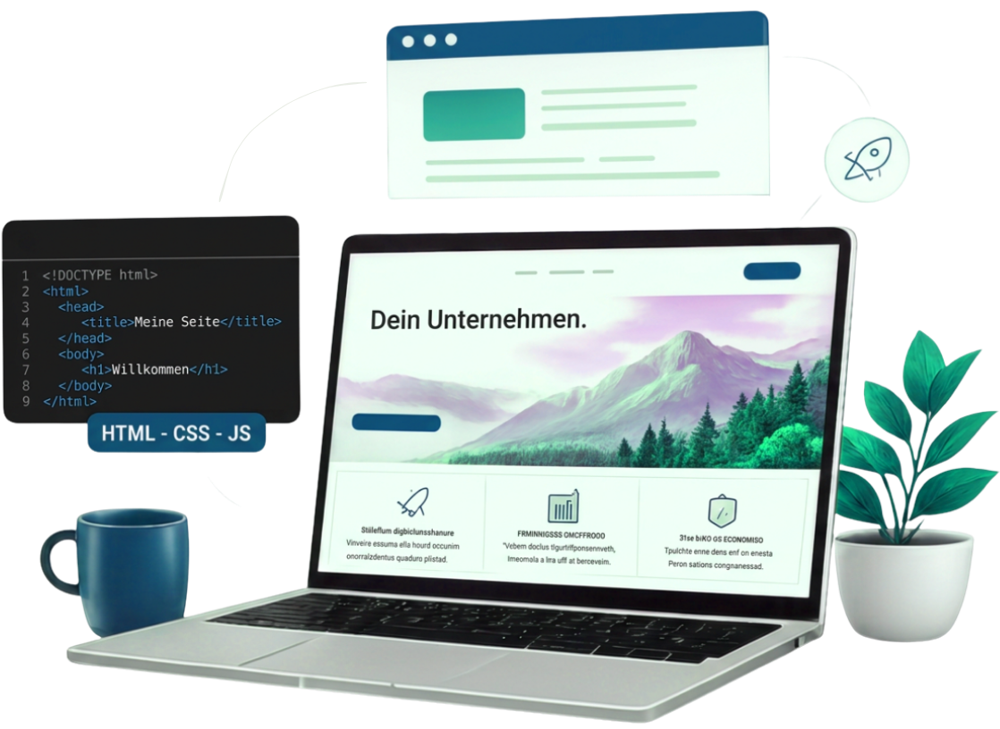

Websites, die wirken. Leistungen, die helfen.
Ich erstelle moderne, schnelle und benutzerfreundliche Websites, die dein Unternehmen professionell präsentieren und neue Kunden gewinnen.
✔ Perönlich
✔ Zuverlässig
✔ Auf Augenhöhe
Ich erstelle moderne, schnelle und benutzerfreundliche Websites, die dein Unternehmen professionell präsentieren und neue Kunden gewinnen.
✔ Perönlich
✔ Zuverlässig
✔ Auf Augenhöhe

Jedes Projekt ist individuell. Deshalb bekommst du eine Website, die genau zu deinem Unternehmen und deinen Zielen passt.
Ich erstelle moderne Websites für kleine Unternehmen, Handwerker und Selbstständige. Dabei achte ich auf eine klare Struktur, verständliche Inhalte und ein sauberes Erscheinungsbild. Deine Website soll nicht nur gut aussehen, sondern Besuchern schnell zeigen, wer du bist, was du anbietest und wie sie dich erreichen können.
Ich gestalte deine Website passend zu deinem Unternehmen und deiner Zielgruppe. Farben, Schrift, Abstände, Bilder und Aufbau werden so gewählt, dass deine Seite professionell, freundlich und vertrauenswürdig wirkt. Mir ist wichtig, dass das Design nicht überladen ist, sondern klar, modern und auf den Punkt.
Deine Website wird für verschiedene Bildschirmgrößen angepasst — vom Smartphone über Tablet bis zum Desktop. Gerade viele Kunden besuchen Websites zuerst über das Handy. Deshalb achte ich darauf, dass Texte lesbar bleiben, Buttons gut bedienbar sind und das Layout auf allen Geräten sauber funktioniert.
Ich kann deine Website mit sinnvollen kleinen Funktionen erweitern, zum Beispiel Formularprüfung, Tabs, Akkordeons, Filter, Slider, Rechner oder kleine Animationen. Dabei geht es nicht um unnötige Spielerei, sondern um Funktionen, die Besuchern helfen und deine Website lebendiger und nützlicher machen.
Auch nach der Veröffentlichung kann ich dich weiter unterstützen. Kleine Textänderungen, neue Bilder, Anpassungen an Inhalten oder technische Kontrollen können regelmäßig betreut werden. So bleibt deine Website aktuell, gepflegt und zuverlässig, ohne dass du dich selbst ständig darum kümmern musst.
Wenn du bereits eine Website hast, die veraltet wirkt oder auf dem Handy nicht gut funktioniert, kann ich sie überarbeiten. Dabei verbessere ich Struktur, Design, Lesbarkeit und Bedienbarkeit. Ziel ist eine modernere Website, die professioneller wirkt und besser zu deinem heutigen Unternehmen passt.